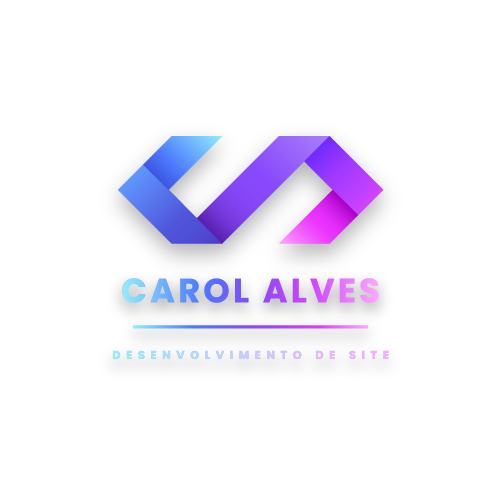
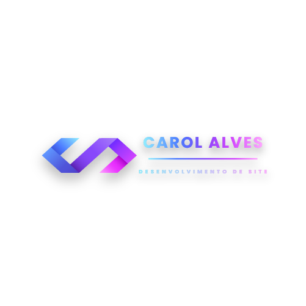

Desenvolvedora Web especializada em criar sites em WordPress e Elementor. Tenho experiência em
desenvolvimento front-end e gerenciamento de mídias sociais.
Resumo Profissionais
Atuei como desenvolvedora de sites utilizando WordPress e Elementor por 11 meses em uma agência de marketing digital,
desempenhando essa função como a minha principal responsabilidade. Durante esse período, também ofereci suporte na
publicação de conteúdos nas mídias sociais dos clientes e colaborei na edição de materiais gráficos utilizando ferramentas
como Photoshop e Illustrator.
Além de minhas responsabilidades principais, também ofereci suporte e realizei correções em um site WooCommerce. Mesmo sem
experiência prévia em PHP, consegui fazer ajustes no site, adquirindo um conhecimento inicial nessa linguagem.
Com a experiência que desenvolvi na agência, decidi atuar como freelancer, criando alguns sites por conta própria.
Agora, busco uma nova oportunidade para continuar evoluindo e contribuir com minhas habilidades e experiências para
novos projetos.
Projeto de Design de Logotipos com Adobe Illustrator
Neste projeto, utilizei o Adobe Illustrator para criar logotipos personalizados, combinando minha criatividade com
imagens de alta qualidade obtidas no Adobe Stock. As imagens foram editadas e adaptadas para atender às necessidades
específicas de cada projeto, resultando em designs únicos e profissionais. O processo envolve a personalização
específica das imagens, garantindo que cada logotipo reflita a identidade e os valores dos clientes. O resultado é
uma coleção de logotipos que destaca a originalidade e a eficácia visual em diferentes contextos de uso.

